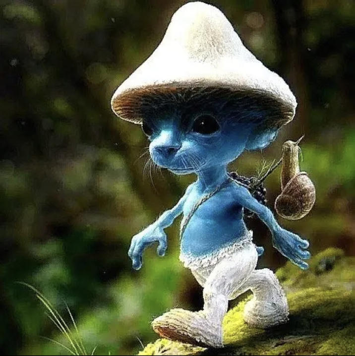

All around the world, people have been seeing sightings of smurf cat (Шайлушай/Shailushai). He brings joy to the hearts of millions of people everyday, with his presence usually being announced with the song "The Spectre" by Alan Walker playing. He prefers to dwell within forests and jungles, but could show up anywhere. This makes it difficult to keep up with the various spottings. That's why we have built a machine called the SMURFCaT, or the Smurf-cat Mapping Universal Recording Failsafe Computer and Tracker. This tracker updates every minute and relays the precise coordinates of the last sighting of Smurf Cat.
